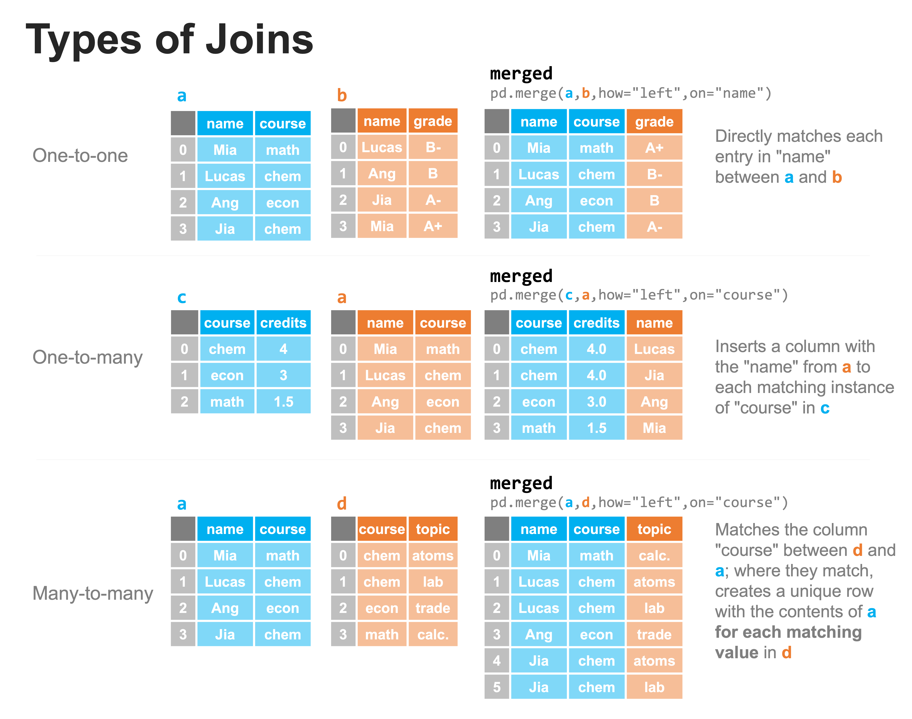
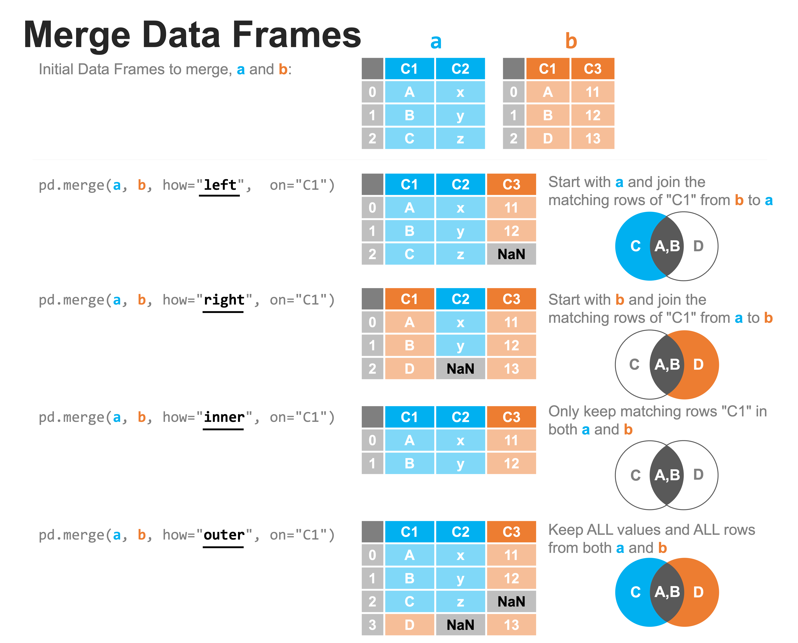

Combining datasets: merging#
In the last lesson, we saw how concatenate can be used to append rows or columns to a DataFrame. However, we also saw the potential pitfalls where there are data mismatches between the two datasets. In this lesson, we’ll explore merge and how to bring datasets together in ways the factor in the existing content of the DataFrame.
Suppose…
You are analyzing the accounts of a firm and were given one dataset with that contained transactions with the corresponding dollar amounts and vendor ID number and a second dataset that contained the vendor ID and the name and industry of the vendor. How could you determine which vendor corresponds to each transaction?
You are developing a system to compute the credits that each student received from taking classes. You have one dataset that has the students and the name of the class they’re taking, and a separate dataset that list the classes and the number of credits each class provides. How do you determine the number of credits each student is taking?
You are on the marketing team where each employee is signed to one of the clients of the firm. In most cases, multiple employees are signed to a single client (forming the client team) and those employees may, themselves work with multiple clients (they are part of multiple teams). Each client has one or more products. How do we get a list of each product that each employee is working on?
We can address each of the above issues by combining datasets using merge. In fact, we’ll see that each of the above examples represents a different type of merge (one-to-one, one-to-many, many-to-many, respectively).
To help us with this discussion, let’s again create two DataFrames that we want to combine; these will be a little different this time:
import pandas as pd
dfa = pd.DataFrame(
{
"animals": ["dog", "cat", "bird", "fish"],
"location": ["land", "land", "air", "water"],
"has_fur": [True, True, False, False],
}
)
dfa
| animals | location | has_fur | |
|---|---|---|---|
| 0 | dog | land | True |
| 1 | cat | land | True |
| 2 | bird | air | False |
| 3 | fish | water | False |
dfb = pd.DataFrame(
{"animals": ["fish", "elephant", "blue whale"], "avg_weight": [4, 12000, 300000]}
)
dfb
| animals | avg_weight | |
|---|---|---|
| 0 | fish | 4 |
| 1 | elephant | 12000 |
| 2 | blue whale | 300000 |
There are a few differences to note here. First, there is one shared column in each DataFrame and that is ‘animals’; the rest are unique. Also, while most of the animals are distinct between these two datasets. To that end, there are 3 ways in which we could merge these DataFrames together referring to the uniqueness of the matches between one dataset and the other:
One-to-one. Each entry in a column of one dataset matches to at most one entry in the column of the second dataset (also, the merge keys are unique in both datasets). This is the simplest case to encounter.
One-to-many. For the column to merge on, there may only be one row with each unique value in that column in one of the datasets, while there may be multiple values in the corresponding column in the other dataset.
Many-to-many. There may be multiple rows containing the same value in the merge column for each of the datasets.
Each of these above situations can be handled with the merge method. The types of joins are illustrated graphically below:

The above examples each work exactly as written. You’ll notice two parameters, “how” and “on”. The parameter “on” specifies which column to compare in each of the two DataFrames, assuming they are named the same in both (if not, you can use “left_on” and “right_on” to specify them separately). The parameter “how” specifies how the merge is to be performed, but we will discuss that more later in this lesson; for now, we use the “left” join, and just know this means we’re always using the left DataFrame as out point of reference for comparing columns. Let’s verify that each of the above merges work as expected. First, the one-to-one:
a = pd.DataFrame(
data={
"name": ["Mia", "Lucas", "Ang", "Jia"],
"course": ["math", "chem", "econ", "chem"],
}
)
a
| name | course | |
|---|---|---|
| 0 | Mia | math |
| 1 | Lucas | chem |
| 2 | Ang | econ |
| 3 | Jia | chem |
b = pd.DataFrame(
data={"name": ["Lucas", "Ang", "Jia", "Mia"], "grade": ["B-", "B", "A-", "B+"]}
)
b
| name | grade | |
|---|---|---|
| 0 | Lucas | B- |
| 1 | Ang | B |
| 2 | Jia | A- |
| 3 | Mia | B+ |
merged = pd.merge(a, b, how="left", on="name")
merged
| name | course | grade | |
|---|---|---|---|
| 0 | Mia | math | B+ |
| 1 | Lucas | chem | B- |
| 2 | Ang | econ | B |
| 3 | Jia | chem | A- |
Next the one-to-many:
c = pd.DataFrame(data={"course": ["chem", "econ", "math"], "credits": [4, 3, 1.5]})
c
| course | credits | |
|---|---|---|
| 0 | chem | 4.0 |
| 1 | econ | 3.0 |
| 2 | math | 1.5 |
merged = pd.merge(c, a, how="left", on="course")
merged
| course | credits | name | |
|---|---|---|---|
| 0 | chem | 4.0 | Lucas |
| 1 | chem | 4.0 | Jia |
| 2 | econ | 3.0 | Ang |
| 3 | math | 1.5 | Mia |
And finally, the many-to-many:
d = pd.DataFrame(
data={
"course": ["chem", "chem", "econ", "math"],
"topic": ["atoms", "lab", "trade", "calc."],
}
)
d
| course | topic | |
|---|---|---|
| 0 | chem | atoms |
| 1 | chem | lab |
| 2 | econ | trade |
| 3 | math | calc. |
merged = pd.merge(a, d, how="left", on="course")
merged
| name | course | topic | |
|---|---|---|---|
| 0 | Mia | math | calc. |
| 1 | Lucas | chem | atoms |
| 2 | Lucas | chem | lab |
| 3 | Ang | econ | trade |
| 4 | Jia | chem | atoms |
| 5 | Jia | chem | lab |
The above are very clean examples of the three types of joins. Incomplete data are common, however, when either a or b are missing some of the content that would otherwise allow for a match. In all the above cases, the merge method can help us here.
Types of merging#
The merge method for pandas DataFrames has numerous parameters, but to accomplish the majority of common merges, there are four types of merges to consider: left, right, inner, and outer, which are each illustrated in the figure below, and through which we specify using the “how” parameter.
Here, the order of entering the parameters is very important. We’ll assume that we’re using the command pd.merge(a, b, ...) with a coming before b and that we’re merging on the data in column “C1”.
A left merge starts with the contents of
a(the DataFrame on the “left”) and joins the rows of “C1” inbthat match something ina. In the example below, we can see that the entries A and B in C1 match, but there is no C inb, therefore, there is aNaNin its place.A right merge performs the same operation, but starts with the contents of
b(the DataFrame on the “right”); in this case we see that there is no match for the value D in column C1 of DataFramea, so that entry has aNaNvalue inserted.An inner merge only keeps rows that have content that matches from both
aandb.An outer merge keeps all value and all rows from both
aandb.

Try it yourself#
Go ahead and try the above examples - create the DataFrames and perform the above merges. Make sure your results look the same as the above.
a = pd.DataFrame(data={"C1": ["A", "B", "C"], "C2": ["x", "y", "z"]})
a
| C1 | C2 | |
|---|---|---|
| 0 | A | x |
| 1 | B | y |
| 2 | C | z |
b = pd.DataFrame(data={"C1": ["A", "B", "D"], "C3": [11, 12, 13]})
b
| C1 | C3 | |
|---|---|---|
| 0 | A | 11 |
| 1 | B | 12 |
| 2 | D | 13 |
merged = pd.merge(a, b, how="left", on="C1")
merged
| C1 | C2 | C3 | |
|---|---|---|---|
| 0 | A | x | 11.0 |
| 1 | B | y | 12.0 |
| 2 | C | z | NaN |
merged = pd.merge(a, b, how="right", on="C1")
merged
| C1 | C2 | C3 | |
|---|---|---|---|
| 0 | A | x | 11 |
| 1 | B | y | 12 |
| 2 | D | NaN | 13 |
merged = pd.merge(a, b, how="inner", on="C1")
merged
| C1 | C2 | C3 | |
|---|---|---|---|
| 0 | A | x | 11 |
| 1 | B | y | 12 |
merged = pd.merge(a, b, how="outer", on="C1")
merged
| C1 | C2 | C3 | |
|---|---|---|---|
| 0 | A | x | 11.0 |
| 1 | B | y | 12.0 |
| 2 | C | z | NaN |
| 3 | D | NaN | 13.0 |
Practical Example#
Let’s explore a practical example: what if we wanted to know how common homicide was in each state in the United States and identify those places where per capita homicide lowest and highest. To start with, this means we’ll need some data, so we’ll use data from the U.S. Centers for Disease Control and Prevention for homicide totals by state and data from the U.S. Census Bureau to get population in 2020. Let’s read those files into dataframes and see what we’ve got!
Note: we’ve removed some extraneous columns to make the example clearer
population = pd.read_csv("data/population.csv")
population
| NAME | POPESTIMATE2020 | |
|---|---|---|
| 0 | United States | 331501080 |
| 1 | Northeast Region | 57525633 |
| 2 | Midwest Region | 68935174 |
| 3 | South Region | 126409007 |
| 4 | West Region | 78631266 |
| 5 | Alabama | 5024803 |
| 6 | Alaska | 732441 |
| 7 | Arizona | 7177986 |
| 8 | Arkansas | 3012232 |
| 9 | California | 39499738 |
| 10 | Colorado | 5784308 |
| 11 | Connecticut | 3600260 |
| 12 | Delaware | 991886 |
| 13 | District of Columbia | 690093 |
| 14 | Florida | 21569932 |
| 15 | Georgia | 10725800 |
| 16 | Hawaii | 1451911 |
| 17 | Idaho | 1847772 |
| 18 | Illinois | 12785245 |
| 19 | Indiana | 6785644 |
| 20 | Iowa | 3188669 |
| 21 | Kansas | 2935880 |
| 22 | Kentucky | 4503958 |
| 23 | Louisiana | 4651203 |
| 24 | Maine | 1362280 |
| 25 | Maryland | 6172679 |
| 26 | Massachusetts | 7022220 |
| 27 | Michigan | 10067664 |
| 28 | Minnesota | 5707165 |
| 29 | Mississippi | 2956870 |
| 30 | Missouri | 6154481 |
| 31 | Montana | 1086193 |
| 32 | Nebraska | 1961455 |
| 33 | Nevada | 3114071 |
| 34 | New Hampshire | 1377848 |
| 35 | New Jersey | 9279743 |
| 36 | New Mexico | 2117566 |
| 37 | New York | 20154933 |
| 38 | North Carolina | 10457177 |
| 39 | North Dakota | 778962 |
| 40 | Ohio | 11790587 |
| 41 | Oklahoma | 3962031 |
| 42 | Oregon | 4241544 |
| 43 | Pennsylvania | 12989625 |
| 44 | Rhode Island | 1096229 |
| 45 | South Carolina | 5130729 |
| 46 | South Dakota | 887099 |
| 47 | Tennessee | 6920119 |
| 48 | Texas | 29217653 |
| 49 | Utah | 3281684 |
| 50 | Vermont | 642495 |
| 51 | Virginia | 8632044 |
| 52 | Washington | 7718785 |
| 53 | West Virginia | 1789798 |
| 54 | Wisconsin | 5892323 |
| 55 | Wyoming | 577267 |
| 56 | Puerto Rico | 3281538 |
homicides = pd.read_csv("data/homicides.csv")
homicides
| STATE | DEATHS | |
|---|---|---|
| 0 | AL | 654 |
| 1 | AK | 55 |
| 2 | AZ | 525 |
| 3 | AR | 371 |
| 4 | CA | 2368 |
| 5 | CO | 336 |
| 6 | CT | 152 |
| 7 | DE | 86 |
| 8 | FL | 1530 |
| 9 | GA | 1093 |
| 10 | HI | 46 |
| 11 | ID | 42 |
| 12 | IL | 1353 |
| 13 | IN | 620 |
| 14 | IA | 106 |
| 15 | KS | 195 |
| 16 | KY | 404 |
| 17 | LA | 873 |
| 18 | ME | 21 |
| 19 | MD | 649 |
| 20 | MA | 183 |
| 21 | MI | 811 |
| 22 | MN | 198 |
| 23 | MS | 576 |
| 24 | MO | 803 |
| 25 | MT | 65 |
| 26 | NE | 76 |
| 27 | NV | 217 |
| 28 | NH | 14 |
| 29 | NJ | 362 |
| 30 | NM | 216 |
| 31 | NY | 875 |
| 32 | NC | 884 |
| 33 | ND | 30 |
| 34 | OH | 1004 |
| 35 | OK | 342 |
| 36 | OR | 157 |
| 37 | PA | 994 |
| 38 | RI | 29 |
| 39 | SC | 622 |
| 40 | SD | 52 |
| 41 | TN | 753 |
| 42 | TX | 2212 |
| 43 | UT | 95 |
| 44 | VT | 14 |
| 45 | VA | 531 |
| 46 | WA | 322 |
| 47 | WV | 114 |
| 48 | WI | 334 |
| 49 | WY | 25 |
There are two items to note here. The first is that the population data has the full state name listed, while the homicide data only has state abbreviations. The second is that while the homicide data has 50 states, the population data has 57 since there are additional regions listed (e.g. “United States”, “Northeast Region”, etc.).
What we’ll want to do, is to add in the state names for each state in the homicide data, then merge the two datasets into one. Once we have that combined dataset, we can calculate the per capita homicide rate in each state and sort our data to determine the highest/lowest per capita.
To add in the state names for each state, let’s load in a dataset that contains the 50 states and their abbreviations:
names = pd.read_csv("data/state_codes.csv")
names
| State | Code | |
|---|---|---|
| 0 | Alabama | AL |
| 1 | Alaska | AK |
| 2 | Arizona | AZ |
| 3 | Arkansas | AR |
| 4 | California | CA |
| 5 | Colorado | CO |
| 6 | Connecticut | CT |
| 7 | Delaware | DE |
| 8 | District of Columbia | DC |
| 9 | Florida | FL |
| 10 | Georgia | GA |
| 11 | Hawaii | HI |
| 12 | Idaho | ID |
| 13 | Illinois | IL |
| 14 | Indiana | IN |
| 15 | Iowa | IA |
| 16 | Kansas | KS |
| 17 | Kentucky | KY |
| 18 | Louisiana | LA |
| 19 | Maine | ME |
| 20 | Maryland | MD |
| 21 | Massachusetts | MA |
| 22 | Michigan | MI |
| 23 | Minnesota | MN |
| 24 | Mississippi | MS |
| 25 | Missouri | MO |
| 26 | Montana | MT |
| 27 | Nebraska | NE |
| 28 | Nevada | NV |
| 29 | New Hampshire | NH |
| 30 | New Jersey | NJ |
| 31 | New Mexico | NM |
| 32 | New York | NY |
| 33 | North Carolina | NC |
| 34 | North Dakota | ND |
| 35 | Ohio | OH |
| 36 | Oklahoma | OK |
| 37 | Oregon | OR |
| 38 | Pennsylvania | PA |
| 39 | Rhode Island | RI |
| 40 | South Carolina | SC |
| 41 | South Dakota | SD |
| 42 | Tennessee | TN |
| 43 | Texas | TX |
| 44 | Utah | UT |
| 45 | Vermont | VT |
| 46 | Virginia | VA |
| 47 | Washington | WA |
| 48 | West Virginia | WV |
| 49 | Wisconsin | WI |
| 50 | Wyoming | WY |
We see another issue here, though: there are 51 states listed with abbreviations (remember, Python starts counting at 0) since the District of Columbia is included while there are 50 states listed in the homicides DataFrame. Let’s left-merge the data so we only keep the 50 states for which we have data. Since the column in homicides that has the labels is labeled ‘STATE’ and the column in names with the state labels is called ‘Code’, we’ll use the ‘left_on’ and ‘right_on’ parameters to specify those columns:
homicides_with_states = pd.merge(
homicides, names, left_on="STATE", right_on="Code", how="left"
)
homicides_with_states
| STATE | DEATHS | State | Code | |
|---|---|---|---|---|
| 0 | AL | 654 | Alabama | AL |
| 1 | AK | 55 | Alaska | AK |
| 2 | AZ | 525 | Arizona | AZ |
| 3 | AR | 371 | Arkansas | AR |
| 4 | CA | 2368 | California | CA |
| 5 | CO | 336 | Colorado | CO |
| 6 | CT | 152 | Connecticut | CT |
| 7 | DE | 86 | Delaware | DE |
| 8 | FL | 1530 | Florida | FL |
| 9 | GA | 1093 | Georgia | GA |
| 10 | HI | 46 | Hawaii | HI |
| 11 | ID | 42 | Idaho | ID |
| 12 | IL | 1353 | Illinois | IL |
| 13 | IN | 620 | Indiana | IN |
| 14 | IA | 106 | Iowa | IA |
| 15 | KS | 195 | Kansas | KS |
| 16 | KY | 404 | Kentucky | KY |
| 17 | LA | 873 | Louisiana | LA |
| 18 | ME | 21 | Maine | ME |
| 19 | MD | 649 | Maryland | MD |
| 20 | MA | 183 | Massachusetts | MA |
| 21 | MI | 811 | Michigan | MI |
| 22 | MN | 198 | Minnesota | MN |
| 23 | MS | 576 | Mississippi | MS |
| 24 | MO | 803 | Missouri | MO |
| 25 | MT | 65 | Montana | MT |
| 26 | NE | 76 | Nebraska | NE |
| 27 | NV | 217 | Nevada | NV |
| 28 | NH | 14 | New Hampshire | NH |
| 29 | NJ | 362 | New Jersey | NJ |
| 30 | NM | 216 | New Mexico | NM |
| 31 | NY | 875 | New York | NY |
| 32 | NC | 884 | North Carolina | NC |
| 33 | ND | 30 | North Dakota | ND |
| 34 | OH | 1004 | Ohio | OH |
| 35 | OK | 342 | Oklahoma | OK |
| 36 | OR | 157 | Oregon | OR |
| 37 | PA | 994 | Pennsylvania | PA |
| 38 | RI | 29 | Rhode Island | RI |
| 39 | SC | 622 | South Carolina | SC |
| 40 | SD | 52 | South Dakota | SD |
| 41 | TN | 753 | Tennessee | TN |
| 42 | TX | 2212 | Texas | TX |
| 43 | UT | 95 | Utah | UT |
| 44 | VT | 14 | Vermont | VT |
| 45 | VA | 531 | Virginia | VA |
| 46 | WA | 322 | Washington | WA |
| 47 | WV | 114 | West Virginia | WV |
| 48 | WI | 334 | Wisconsin | WI |
| 49 | WY | 25 | Wyoming | WY |
Now we have those items combined, but we don’t need the “STATE” or “Code” columns, so let’s drop them using the drop method. We’ll do this operation in place so that rather than having to write:
homicides3 = homicides_with_states.drop(columns=['STATE','Code'])
which leads to a proliferation of variables each time we want to do a new operation (homicide3, homicide4, etc.); instead we can perform the operation directly on the data using the inplace=True keyword.
homicides_with_states = homicides_with_states.drop(columns=["STATE", "Code"])
homicides_with_states
| DEATHS | State | |
|---|---|---|
| 0 | 654 | Alabama |
| 1 | 55 | Alaska |
| 2 | 525 | Arizona |
| 3 | 371 | Arkansas |
| 4 | 2368 | California |
| 5 | 336 | Colorado |
| 6 | 152 | Connecticut |
| 7 | 86 | Delaware |
| 8 | 1530 | Florida |
| 9 | 1093 | Georgia |
| 10 | 46 | Hawaii |
| 11 | 42 | Idaho |
| 12 | 1353 | Illinois |
| 13 | 620 | Indiana |
| 14 | 106 | Iowa |
| 15 | 195 | Kansas |
| 16 | 404 | Kentucky |
| 17 | 873 | Louisiana |
| 18 | 21 | Maine |
| 19 | 649 | Maryland |
| 20 | 183 | Massachusetts |
| 21 | 811 | Michigan |
| 22 | 198 | Minnesota |
| 23 | 576 | Mississippi |
| 24 | 803 | Missouri |
| 25 | 65 | Montana |
| 26 | 76 | Nebraska |
| 27 | 217 | Nevada |
| 28 | 14 | New Hampshire |
| 29 | 362 | New Jersey |
| 30 | 216 | New Mexico |
| 31 | 875 | New York |
| 32 | 884 | North Carolina |
| 33 | 30 | North Dakota |
| 34 | 1004 | Ohio |
| 35 | 342 | Oklahoma |
| 36 | 157 | Oregon |
| 37 | 994 | Pennsylvania |
| 38 | 29 | Rhode Island |
| 39 | 622 | South Carolina |
| 40 | 52 | South Dakota |
| 41 | 753 | Tennessee |
| 42 | 2212 | Texas |
| 43 | 95 | Utah |
| 44 | 14 | Vermont |
| 45 | 531 | Virginia |
| 46 | 322 | Washington |
| 47 | 114 | West Virginia |
| 48 | 334 | Wisconsin |
| 49 | 25 | Wyoming |
And just because it’s easier to reference cleaned and ordered labels, let’s rename ‘DEATHS’ to ‘homicides’ using rename.
homicides_with_states = homicides_with_states.rename(
columns={"DEATHS": "homicides", "State": "state"}
)
homicides_with_states
| homicides | state | |
|---|---|---|
| 0 | 654 | Alabama |
| 1 | 55 | Alaska |
| 2 | 525 | Arizona |
| 3 | 371 | Arkansas |
| 4 | 2368 | California |
| 5 | 336 | Colorado |
| 6 | 152 | Connecticut |
| 7 | 86 | Delaware |
| 8 | 1530 | Florida |
| 9 | 1093 | Georgia |
| 10 | 46 | Hawaii |
| 11 | 42 | Idaho |
| 12 | 1353 | Illinois |
| 13 | 620 | Indiana |
| 14 | 106 | Iowa |
| 15 | 195 | Kansas |
| 16 | 404 | Kentucky |
| 17 | 873 | Louisiana |
| 18 | 21 | Maine |
| 19 | 649 | Maryland |
| 20 | 183 | Massachusetts |
| 21 | 811 | Michigan |
| 22 | 198 | Minnesota |
| 23 | 576 | Mississippi |
| 24 | 803 | Missouri |
| 25 | 65 | Montana |
| 26 | 76 | Nebraska |
| 27 | 217 | Nevada |
| 28 | 14 | New Hampshire |
| 29 | 362 | New Jersey |
| 30 | 216 | New Mexico |
| 31 | 875 | New York |
| 32 | 884 | North Carolina |
| 33 | 30 | North Dakota |
| 34 | 1004 | Ohio |
| 35 | 342 | Oklahoma |
| 36 | 157 | Oregon |
| 37 | 994 | Pennsylvania |
| 38 | 29 | Rhode Island |
| 39 | 622 | South Carolina |
| 40 | 52 | South Dakota |
| 41 | 753 | Tennessee |
| 42 | 2212 | Texas |
| 43 | 95 | Utah |
| 44 | 14 | Vermont |
| 45 | 531 | Virginia |
| 46 | 322 | Washington |
| 47 | 114 | West Virginia |
| 48 | 334 | Wisconsin |
| 49 | 25 | Wyoming |
Great - now we’re ready to merge in our population data. Let’s perform an outer merge so that we keep all our data, then we can check what’s missing and remove it as appropriate.
combined = pd.merge(
homicides_with_states, population, how="outer", left_on="state", right_on="NAME"
)
combined
| homicides | state | NAME | POPESTIMATE2020 | |
|---|---|---|---|---|
| 0 | 654.0 | Alabama | Alabama | 5024803 |
| 1 | 55.0 | Alaska | Alaska | 732441 |
| 2 | 525.0 | Arizona | Arizona | 7177986 |
| 3 | 371.0 | Arkansas | Arkansas | 3012232 |
| 4 | 2368.0 | California | California | 39499738 |
| 5 | 336.0 | Colorado | Colorado | 5784308 |
| 6 | 152.0 | Connecticut | Connecticut | 3600260 |
| 7 | 86.0 | Delaware | Delaware | 991886 |
| 8 | 1530.0 | Florida | Florida | 21569932 |
| 9 | 1093.0 | Georgia | Georgia | 10725800 |
| 10 | 46.0 | Hawaii | Hawaii | 1451911 |
| 11 | 42.0 | Idaho | Idaho | 1847772 |
| 12 | 1353.0 | Illinois | Illinois | 12785245 |
| 13 | 620.0 | Indiana | Indiana | 6785644 |
| 14 | 106.0 | Iowa | Iowa | 3188669 |
| 15 | 195.0 | Kansas | Kansas | 2935880 |
| 16 | 404.0 | Kentucky | Kentucky | 4503958 |
| 17 | 873.0 | Louisiana | Louisiana | 4651203 |
| 18 | 21.0 | Maine | Maine | 1362280 |
| 19 | 649.0 | Maryland | Maryland | 6172679 |
| 20 | 183.0 | Massachusetts | Massachusetts | 7022220 |
| 21 | 811.0 | Michigan | Michigan | 10067664 |
| 22 | 198.0 | Minnesota | Minnesota | 5707165 |
| 23 | 576.0 | Mississippi | Mississippi | 2956870 |
| 24 | 803.0 | Missouri | Missouri | 6154481 |
| 25 | 65.0 | Montana | Montana | 1086193 |
| 26 | 76.0 | Nebraska | Nebraska | 1961455 |
| 27 | 217.0 | Nevada | Nevada | 3114071 |
| 28 | 14.0 | New Hampshire | New Hampshire | 1377848 |
| 29 | 362.0 | New Jersey | New Jersey | 9279743 |
| 30 | 216.0 | New Mexico | New Mexico | 2117566 |
| 31 | 875.0 | New York | New York | 20154933 |
| 32 | 884.0 | North Carolina | North Carolina | 10457177 |
| 33 | 30.0 | North Dakota | North Dakota | 778962 |
| 34 | 1004.0 | Ohio | Ohio | 11790587 |
| 35 | 342.0 | Oklahoma | Oklahoma | 3962031 |
| 36 | 157.0 | Oregon | Oregon | 4241544 |
| 37 | 994.0 | Pennsylvania | Pennsylvania | 12989625 |
| 38 | 29.0 | Rhode Island | Rhode Island | 1096229 |
| 39 | 622.0 | South Carolina | South Carolina | 5130729 |
| 40 | 52.0 | South Dakota | South Dakota | 887099 |
| 41 | 753.0 | Tennessee | Tennessee | 6920119 |
| 42 | 2212.0 | Texas | Texas | 29217653 |
| 43 | 95.0 | Utah | Utah | 3281684 |
| 44 | 14.0 | Vermont | Vermont | 642495 |
| 45 | 531.0 | Virginia | Virginia | 8632044 |
| 46 | 322.0 | Washington | Washington | 7718785 |
| 47 | 114.0 | West Virginia | West Virginia | 1789798 |
| 48 | 334.0 | Wisconsin | Wisconsin | 5892323 |
| 49 | 25.0 | Wyoming | Wyoming | 577267 |
| 50 | NaN | NaN | United States | 331501080 |
| 51 | NaN | NaN | Northeast Region | 57525633 |
| 52 | NaN | NaN | Midwest Region | 68935174 |
| 53 | NaN | NaN | South Region | 126409007 |
| 54 | NaN | NaN | West Region | 78631266 |
| 55 | NaN | NaN | District of Columbia | 690093 |
| 56 | NaN | NaN | Puerto Rico | 3281538 |
We can see from the above that we have a number of NaN values. Let’s look at rows with any NaN values:
combined[combined.isna().any(axis=1)]
| homicides | state | NAME | POPESTIMATE2020 | |
|---|---|---|---|---|
| 50 | NaN | NaN | United States | 331501080 |
| 51 | NaN | NaN | Northeast Region | 57525633 |
| 52 | NaN | NaN | Midwest Region | 68935174 |
| 53 | NaN | NaN | South Region | 126409007 |
| 54 | NaN | NaN | West Region | 78631266 |
| 55 | NaN | NaN | District of Columbia | 690093 |
| 56 | NaN | NaN | Puerto Rico | 3281538 |
Let’s just break down the above statement for a moment for comprehension. combined.isna() returns a True value for each entry in the DataFrame with a NaN value. The .any(axis=1) looks across axis 1 and if any of the entries in that row (across all columns) has a True value, then that row is represented with a True. Let’s look at the steps so it’s clear:
combined.isna()
| homicides | state | NAME | POPESTIMATE2020 | |
|---|---|---|---|---|
| 0 | False | False | False | False |
| 1 | False | False | False | False |
| 2 | False | False | False | False |
| 3 | False | False | False | False |
| 4 | False | False | False | False |
| 5 | False | False | False | False |
| 6 | False | False | False | False |
| 7 | False | False | False | False |
| 8 | False | False | False | False |
| 9 | False | False | False | False |
| 10 | False | False | False | False |
| 11 | False | False | False | False |
| 12 | False | False | False | False |
| 13 | False | False | False | False |
| 14 | False | False | False | False |
| 15 | False | False | False | False |
| 16 | False | False | False | False |
| 17 | False | False | False | False |
| 18 | False | False | False | False |
| 19 | False | False | False | False |
| 20 | False | False | False | False |
| 21 | False | False | False | False |
| 22 | False | False | False | False |
| 23 | False | False | False | False |
| 24 | False | False | False | False |
| 25 | False | False | False | False |
| 26 | False | False | False | False |
| 27 | False | False | False | False |
| 28 | False | False | False | False |
| 29 | False | False | False | False |
| 30 | False | False | False | False |
| 31 | False | False | False | False |
| 32 | False | False | False | False |
| 33 | False | False | False | False |
| 34 | False | False | False | False |
| 35 | False | False | False | False |
| 36 | False | False | False | False |
| 37 | False | False | False | False |
| 38 | False | False | False | False |
| 39 | False | False | False | False |
| 40 | False | False | False | False |
| 41 | False | False | False | False |
| 42 | False | False | False | False |
| 43 | False | False | False | False |
| 44 | False | False | False | False |
| 45 | False | False | False | False |
| 46 | False | False | False | False |
| 47 | False | False | False | False |
| 48 | False | False | False | False |
| 49 | False | False | False | False |
| 50 | True | True | False | False |
| 51 | True | True | False | False |
| 52 | True | True | False | False |
| 53 | True | True | False | False |
| 54 | True | True | False | False |
| 55 | True | True | False | False |
| 56 | True | True | False | False |
combined.isna().any(axis=1)
0 False
1 False
2 False
3 False
4 False
5 False
6 False
7 False
8 False
9 False
10 False
11 False
12 False
13 False
14 False
15 False
16 False
17 False
18 False
19 False
20 False
21 False
22 False
23 False
24 False
25 False
26 False
27 False
28 False
29 False
30 False
31 False
32 False
33 False
34 False
35 False
36 False
37 False
38 False
39 False
40 False
41 False
42 False
43 False
44 False
45 False
46 False
47 False
48 False
49 False
50 True
51 True
52 True
53 True
54 True
55 True
56 True
dtype: bool
So when we put it altogether, it only displaces those rows with NaN values:
combined[combined.isna().any(axis=1)]
| homicides | state | NAME | POPESTIMATE2020 | |
|---|---|---|---|---|
| 50 | NaN | NaN | United States | 331501080 |
| 51 | NaN | NaN | Northeast Region | 57525633 |
| 52 | NaN | NaN | Midwest Region | 68935174 |
| 53 | NaN | NaN | South Region | 126409007 |
| 54 | NaN | NaN | West Region | 78631266 |
| 55 | NaN | NaN | District of Columbia | 690093 |
| 56 | NaN | NaN | Puerto Rico | 3281538 |
What we can see here is that we don’t need any of these regions, as none are U.S. states, so let’s drop them using the dropna method:
combined = combined.dropna(axis=0)
combined
| homicides | state | NAME | POPESTIMATE2020 | |
|---|---|---|---|---|
| 0 | 654.0 | Alabama | Alabama | 5024803 |
| 1 | 55.0 | Alaska | Alaska | 732441 |
| 2 | 525.0 | Arizona | Arizona | 7177986 |
| 3 | 371.0 | Arkansas | Arkansas | 3012232 |
| 4 | 2368.0 | California | California | 39499738 |
| 5 | 336.0 | Colorado | Colorado | 5784308 |
| 6 | 152.0 | Connecticut | Connecticut | 3600260 |
| 7 | 86.0 | Delaware | Delaware | 991886 |
| 8 | 1530.0 | Florida | Florida | 21569932 |
| 9 | 1093.0 | Georgia | Georgia | 10725800 |
| 10 | 46.0 | Hawaii | Hawaii | 1451911 |
| 11 | 42.0 | Idaho | Idaho | 1847772 |
| 12 | 1353.0 | Illinois | Illinois | 12785245 |
| 13 | 620.0 | Indiana | Indiana | 6785644 |
| 14 | 106.0 | Iowa | Iowa | 3188669 |
| 15 | 195.0 | Kansas | Kansas | 2935880 |
| 16 | 404.0 | Kentucky | Kentucky | 4503958 |
| 17 | 873.0 | Louisiana | Louisiana | 4651203 |
| 18 | 21.0 | Maine | Maine | 1362280 |
| 19 | 649.0 | Maryland | Maryland | 6172679 |
| 20 | 183.0 | Massachusetts | Massachusetts | 7022220 |
| 21 | 811.0 | Michigan | Michigan | 10067664 |
| 22 | 198.0 | Minnesota | Minnesota | 5707165 |
| 23 | 576.0 | Mississippi | Mississippi | 2956870 |
| 24 | 803.0 | Missouri | Missouri | 6154481 |
| 25 | 65.0 | Montana | Montana | 1086193 |
| 26 | 76.0 | Nebraska | Nebraska | 1961455 |
| 27 | 217.0 | Nevada | Nevada | 3114071 |
| 28 | 14.0 | New Hampshire | New Hampshire | 1377848 |
| 29 | 362.0 | New Jersey | New Jersey | 9279743 |
| 30 | 216.0 | New Mexico | New Mexico | 2117566 |
| 31 | 875.0 | New York | New York | 20154933 |
| 32 | 884.0 | North Carolina | North Carolina | 10457177 |
| 33 | 30.0 | North Dakota | North Dakota | 778962 |
| 34 | 1004.0 | Ohio | Ohio | 11790587 |
| 35 | 342.0 | Oklahoma | Oklahoma | 3962031 |
| 36 | 157.0 | Oregon | Oregon | 4241544 |
| 37 | 994.0 | Pennsylvania | Pennsylvania | 12989625 |
| 38 | 29.0 | Rhode Island | Rhode Island | 1096229 |
| 39 | 622.0 | South Carolina | South Carolina | 5130729 |
| 40 | 52.0 | South Dakota | South Dakota | 887099 |
| 41 | 753.0 | Tennessee | Tennessee | 6920119 |
| 42 | 2212.0 | Texas | Texas | 29217653 |
| 43 | 95.0 | Utah | Utah | 3281684 |
| 44 | 14.0 | Vermont | Vermont | 642495 |
| 45 | 531.0 | Virginia | Virginia | 8632044 |
| 46 | 322.0 | Washington | Washington | 7718785 |
| 47 | 114.0 | West Virginia | West Virginia | 1789798 |
| 48 | 334.0 | Wisconsin | Wisconsin | 5892323 |
| 49 | 25.0 | Wyoming | Wyoming | 577267 |
Now that we have our data let’s take one more step to clean the formatting of our data. Let’s drop the extra column with state names and rename ‘POPESTIMATE2020’ to ‘population’:
combined = combined.drop(columns=["NAME"])
combined = combined.rename(columns={"POPESTIMATE2020": "population"})
combined
| homicides | state | population | |
|---|---|---|---|
| 0 | 654.0 | Alabama | 5024803 |
| 1 | 55.0 | Alaska | 732441 |
| 2 | 525.0 | Arizona | 7177986 |
| 3 | 371.0 | Arkansas | 3012232 |
| 4 | 2368.0 | California | 39499738 |
| 5 | 336.0 | Colorado | 5784308 |
| 6 | 152.0 | Connecticut | 3600260 |
| 7 | 86.0 | Delaware | 991886 |
| 8 | 1530.0 | Florida | 21569932 |
| 9 | 1093.0 | Georgia | 10725800 |
| 10 | 46.0 | Hawaii | 1451911 |
| 11 | 42.0 | Idaho | 1847772 |
| 12 | 1353.0 | Illinois | 12785245 |
| 13 | 620.0 | Indiana | 6785644 |
| 14 | 106.0 | Iowa | 3188669 |
| 15 | 195.0 | Kansas | 2935880 |
| 16 | 404.0 | Kentucky | 4503958 |
| 17 | 873.0 | Louisiana | 4651203 |
| 18 | 21.0 | Maine | 1362280 |
| 19 | 649.0 | Maryland | 6172679 |
| 20 | 183.0 | Massachusetts | 7022220 |
| 21 | 811.0 | Michigan | 10067664 |
| 22 | 198.0 | Minnesota | 5707165 |
| 23 | 576.0 | Mississippi | 2956870 |
| 24 | 803.0 | Missouri | 6154481 |
| 25 | 65.0 | Montana | 1086193 |
| 26 | 76.0 | Nebraska | 1961455 |
| 27 | 217.0 | Nevada | 3114071 |
| 28 | 14.0 | New Hampshire | 1377848 |
| 29 | 362.0 | New Jersey | 9279743 |
| 30 | 216.0 | New Mexico | 2117566 |
| 31 | 875.0 | New York | 20154933 |
| 32 | 884.0 | North Carolina | 10457177 |
| 33 | 30.0 | North Dakota | 778962 |
| 34 | 1004.0 | Ohio | 11790587 |
| 35 | 342.0 | Oklahoma | 3962031 |
| 36 | 157.0 | Oregon | 4241544 |
| 37 | 994.0 | Pennsylvania | 12989625 |
| 38 | 29.0 | Rhode Island | 1096229 |
| 39 | 622.0 | South Carolina | 5130729 |
| 40 | 52.0 | South Dakota | 887099 |
| 41 | 753.0 | Tennessee | 6920119 |
| 42 | 2212.0 | Texas | 29217653 |
| 43 | 95.0 | Utah | 3281684 |
| 44 | 14.0 | Vermont | 642495 |
| 45 | 531.0 | Virginia | 8632044 |
| 46 | 322.0 | Washington | 7718785 |
| 47 | 114.0 | West Virginia | 1789798 |
| 48 | 334.0 | Wisconsin | 5892323 |
| 49 | 25.0 | Wyoming | 577267 |
How we’re ready to conduct our analysis. Let’s create a new column called ‘homicide_rate’ and it will be the number of homicides divided by the state population. Since this number is typically a small value, this is often reported as the number of homicides per 100,000 people, so we just multiply the result by 100,000.
combined["homicide_rate"] = combined["homicides"] / combined["population"] * 100000
combined
| homicides | state | population | homicide_rate | |
|---|---|---|---|---|
| 0 | 654.0 | Alabama | 5024803 | 13.015436 |
| 1 | 55.0 | Alaska | 732441 | 7.509137 |
| 2 | 525.0 | Arizona | 7177986 | 7.314029 |
| 3 | 371.0 | Arkansas | 3012232 | 12.316448 |
| 4 | 2368.0 | California | 39499738 | 5.994976 |
| 5 | 336.0 | Colorado | 5784308 | 5.808819 |
| 6 | 152.0 | Connecticut | 3600260 | 4.221917 |
| 7 | 86.0 | Delaware | 991886 | 8.670351 |
| 8 | 1530.0 | Florida | 21569932 | 7.093207 |
| 9 | 1093.0 | Georgia | 10725800 | 10.190382 |
| 10 | 46.0 | Hawaii | 1451911 | 3.168238 |
| 11 | 42.0 | Idaho | 1847772 | 2.273008 |
| 12 | 1353.0 | Illinois | 12785245 | 10.582511 |
| 13 | 620.0 | Indiana | 6785644 | 9.136937 |
| 14 | 106.0 | Iowa | 3188669 | 3.324271 |
| 15 | 195.0 | Kansas | 2935880 | 6.641961 |
| 16 | 404.0 | Kentucky | 4503958 | 8.969888 |
| 17 | 873.0 | Louisiana | 4651203 | 18.769338 |
| 18 | 21.0 | Maine | 1362280 | 1.541533 |
| 19 | 649.0 | Maryland | 6172679 | 10.514073 |
| 20 | 183.0 | Massachusetts | 7022220 | 2.606013 |
| 21 | 811.0 | Michigan | 10067664 | 8.055493 |
| 22 | 198.0 | Minnesota | 5707165 | 3.469323 |
| 23 | 576.0 | Mississippi | 2956870 | 19.480058 |
| 24 | 803.0 | Missouri | 6154481 | 13.047404 |
| 25 | 65.0 | Montana | 1086193 | 5.984204 |
| 26 | 76.0 | Nebraska | 1961455 | 3.874675 |
| 27 | 217.0 | Nevada | 3114071 | 6.968370 |
| 28 | 14.0 | New Hampshire | 1377848 | 1.016077 |
| 29 | 362.0 | New Jersey | 9279743 | 3.900970 |
| 30 | 216.0 | New Mexico | 2117566 | 10.200390 |
| 31 | 875.0 | New York | 20154933 | 4.341369 |
| 32 | 884.0 | North Carolina | 10457177 | 8.453524 |
| 33 | 30.0 | North Dakota | 778962 | 3.851279 |
| 34 | 1004.0 | Ohio | 11790587 | 8.515267 |
| 35 | 342.0 | Oklahoma | 3962031 | 8.631936 |
| 36 | 157.0 | Oregon | 4241544 | 3.701482 |
| 37 | 994.0 | Pennsylvania | 12989625 | 7.652261 |
| 38 | 29.0 | Rhode Island | 1096229 | 2.645433 |
| 39 | 622.0 | South Carolina | 5130729 | 12.123034 |
| 40 | 52.0 | South Dakota | 887099 | 5.861803 |
| 41 | 753.0 | Tennessee | 6920119 | 10.881316 |
| 42 | 2212.0 | Texas | 29217653 | 7.570766 |
| 43 | 95.0 | Utah | 3281684 | 2.894855 |
| 44 | 14.0 | Vermont | 642495 | 2.179005 |
| 45 | 531.0 | Virginia | 8632044 | 6.151498 |
| 46 | 322.0 | Washington | 7718785 | 4.171641 |
| 47 | 114.0 | West Virginia | 1789798 | 6.369434 |
| 48 | 334.0 | Wisconsin | 5892323 | 5.668393 |
| 49 | 25.0 | Wyoming | 577267 | 4.330752 |
Lastly, let’s sort the data by ‘homicide_rate’ to see what the states are with the highest and lowest rates:
combined = combined.sort_values(by="homicide_rate")
combined
| homicides | state | population | homicide_rate | |
|---|---|---|---|---|
| 28 | 14.0 | New Hampshire | 1377848 | 1.016077 |
| 18 | 21.0 | Maine | 1362280 | 1.541533 |
| 44 | 14.0 | Vermont | 642495 | 2.179005 |
| 11 | 42.0 | Idaho | 1847772 | 2.273008 |
| 20 | 183.0 | Massachusetts | 7022220 | 2.606013 |
| 38 | 29.0 | Rhode Island | 1096229 | 2.645433 |
| 43 | 95.0 | Utah | 3281684 | 2.894855 |
| 10 | 46.0 | Hawaii | 1451911 | 3.168238 |
| 14 | 106.0 | Iowa | 3188669 | 3.324271 |
| 22 | 198.0 | Minnesota | 5707165 | 3.469323 |
| 36 | 157.0 | Oregon | 4241544 | 3.701482 |
| 33 | 30.0 | North Dakota | 778962 | 3.851279 |
| 26 | 76.0 | Nebraska | 1961455 | 3.874675 |
| 29 | 362.0 | New Jersey | 9279743 | 3.900970 |
| 46 | 322.0 | Washington | 7718785 | 4.171641 |
| 6 | 152.0 | Connecticut | 3600260 | 4.221917 |
| 49 | 25.0 | Wyoming | 577267 | 4.330752 |
| 31 | 875.0 | New York | 20154933 | 4.341369 |
| 48 | 334.0 | Wisconsin | 5892323 | 5.668393 |
| 5 | 336.0 | Colorado | 5784308 | 5.808819 |
| 40 | 52.0 | South Dakota | 887099 | 5.861803 |
| 25 | 65.0 | Montana | 1086193 | 5.984204 |
| 4 | 2368.0 | California | 39499738 | 5.994976 |
| 45 | 531.0 | Virginia | 8632044 | 6.151498 |
| 47 | 114.0 | West Virginia | 1789798 | 6.369434 |
| 15 | 195.0 | Kansas | 2935880 | 6.641961 |
| 27 | 217.0 | Nevada | 3114071 | 6.968370 |
| 8 | 1530.0 | Florida | 21569932 | 7.093207 |
| 2 | 525.0 | Arizona | 7177986 | 7.314029 |
| 1 | 55.0 | Alaska | 732441 | 7.509137 |
| 42 | 2212.0 | Texas | 29217653 | 7.570766 |
| 37 | 994.0 | Pennsylvania | 12989625 | 7.652261 |
| 21 | 811.0 | Michigan | 10067664 | 8.055493 |
| 32 | 884.0 | North Carolina | 10457177 | 8.453524 |
| 34 | 1004.0 | Ohio | 11790587 | 8.515267 |
| 35 | 342.0 | Oklahoma | 3962031 | 8.631936 |
| 7 | 86.0 | Delaware | 991886 | 8.670351 |
| 16 | 404.0 | Kentucky | 4503958 | 8.969888 |
| 13 | 620.0 | Indiana | 6785644 | 9.136937 |
| 9 | 1093.0 | Georgia | 10725800 | 10.190382 |
| 30 | 216.0 | New Mexico | 2117566 | 10.200390 |
| 19 | 649.0 | Maryland | 6172679 | 10.514073 |
| 12 | 1353.0 | Illinois | 12785245 | 10.582511 |
| 41 | 753.0 | Tennessee | 6920119 | 10.881316 |
| 39 | 622.0 | South Carolina | 5130729 | 12.123034 |
| 3 | 371.0 | Arkansas | 3012232 | 12.316448 |
| 0 | 654.0 | Alabama | 5024803 | 13.015436 |
| 24 | 803.0 | Missouri | 6154481 | 13.047404 |
| 17 | 873.0 | Louisiana | 4651203 | 18.769338 |
| 23 | 576.0 | Mississippi | 2956870 | 19.480058 |
We can see that the states of New Hampshire, Maine, Vermont, Idaho, and Massachusetts, each have homicide rates between and 1 and 2.6 people per 100,000. Arkansas, Alabama, Missouri, Louisiana, and Mississippi have far higher rates ranging from 12.3 to 19.5 people per 100,000. The homicide rate is nearly 20 times higher in Mississippi than it is in New Hampshire.
All of the skills and tools shown here scale up to larger datasets as well. As we can see, data preparation was a significant part of the effort and being able to programmatically complete the process was essential. Data preparation requires careful design to take care of potential imperfections, omissions, or mismatches in the data. Once taken care of, the subsequent analysis can proceed for us to derive insights from our data.
Summary#
In this section, we saw that merging is a key tool for combining datasets and is able to accommodate many of the common types of merges that we would want to execute. Merging data allows us to integrate the information from two DataFrames logically and coherently to prepare it for further analysis and querying, but care must be taken in structuring the merge so that we don’t lose data or introduce unwanted NaN values. Next, you’ll get some practice merging data. Once we have our data combined, in an upcoming lesson, we’ll explore how to group our data by its columns.